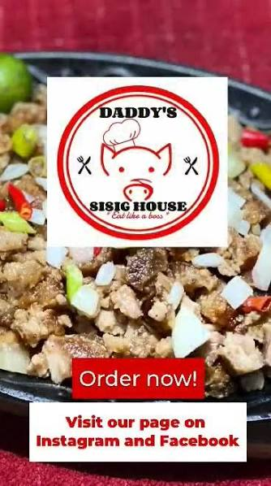
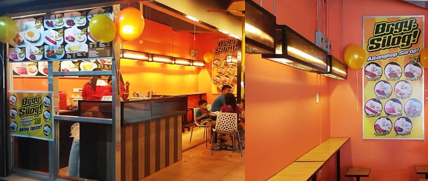

Pastil sa Tabi
Budget Meals - Near TUP
I recommend Pastil sa Tabi because it offers affordable and filling meals that are perfect for students with a tight budget.

"Affordable food spots near TUP for students looking for good meals without spending too much."

Budget Meals - Near TUP
I recommend Pastil sa Tabi because it offers affordable and filling meals that are perfect for students with a tight budget.
Affordable Food - Near TUP
I recommend Daddy's Sisig House because it offers flavorful and affordable meals that are great for students looking for a satisfying meal on a budget.

Silog Meals - Near TUP
I recommend Brgy. Silog because it offers different silog combinations, making it a good option when you want more variety in your meal.
